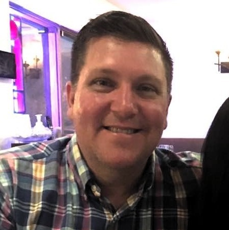

About Me
I was a late bloomer. I took the long way round. The slow boat to China. Any euphemism you can use to define not knowing what to do with one's life and that described me - and I am the better for it. I did roofing. I was a drummer in a rock band. A restaurant manager. I joined the Navy at 25. At year 30- I began what would eventually lead to a 17 year career as a technical sales person for a global distribution company. While my colleagues (typically in their early 20's) were starting their professional careers- I was playing Pearl Jam songs at the Hard Rock in Cancun or at sea- refueling a destroyer off the coast of Argentina.
I have always enjoyed learning through experience and I count the friendships I have made along the way as inseparable to that experience. It is in the spirit of collaboration which has helped me navigate the various episodes of my life. Now- as I enter a new episode - I hope my quest for experience and collaboration will benefit you.
Connect with Me